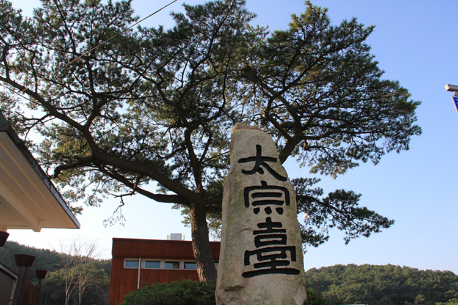

著名景点
#太宗台#
太宗台是釜山市的受保护文物，与五六岛一起都属于代表釜山的岩石海岸，十分有名。新罗第29 代王太宗武烈王，在实现了三国统一的伟业之后，巡视全国时曾在太宗台射箭游玩，因此而叫太宗台。

图：太宗台景点
以海拔250 米的最高峰为中心，长有松树等200 多种茂密的树木，好似鬼斧神工削凿而成的悬崖峭壁，怪石奇岩，险峻奇丽，“太宗台”郁郁葱葱的树林和粼粼的波涛，绿蓝交映，在明丽的天空下，十分迤逦。天气晴好的日子，还能看到海对面的日本领土。
Tips：
1、观光车内设有介绍太宗台著名景点的中文广播。
2、游览前注意一下天气情况，避免大风大雨的日子，这样景色会大打折扣。
3、穿着舒适的鞋子。灯塔靠近神仙岩附近的岩石比较难攀爬，游玩时需注意安全。
地址：釜山影岛区东三洞山29-1/ 부산광역시 영도구 전망로 24 （ 동삼동 ）
费用：免费 开放时间：04：00 –24：00
联系方式：+82-51-405-2004
交通：在釜山市区乘8、13、30、88、101公共汽车或坐游艇前往；在市政府前乘巴士需30分钟
#釜山电影街#
釜山国际电影节创办于1996年，是韩国亦是亚洲最重要的电影节之一，受到釜山市政府、电影界、企业界等部门的支持与资助，每年9月至10月间在韩国第二大的港口城市釜山举行，主会场是釜山市南浦洞PIFF广场。
从第9届开始，主要场地从南浦洞改到海云台，但PIFF广场仍然有各种摊位及电视台的表演。
这里也是很多当地年轻人聚集的地方，广场周边有很多商店和餐厅，热闹非凡。从入口开始一直到忠武洞天桥400多米的道路上，一共有7个上映馆的电影院、国岛剧场等7-8个剧场。
为纪念电影节，南浦洞街上建起BIFF（Busan International Film Festival）广场，每年刻有获奖人手掌、脚印的铜盘和获奖作品名字的铜盘都会被镶在广场的地面上。
地址：釜山中区南浦洞
交通：地铁1号线在南浦洞站下车，需要10分钟；乘高速巴士，在南浦洞站下车，需40分钟

图：釜山电影街
#海云台#
海云台是韩国海滨的代名词，也是釜山的骄傲。
这里蜿蜒曲折，长达2千米的白沙滩，加上苍翠浓郁的冬柏岛，组成了一幅绚丽的图画，被誉为韩国八景之一。每年的正月十五，这里会举行赏月庆典、沙雕展、釜山大海庆典等大大小小的活动，并且海云台周边的冬柏岛、五六岛、水族馆、快艇赛场、BEXCO、迎月岭路、兜风路线等景点也值得游人观赏。
每到夏天人山人海的游客都会涌向海边，海云台沙滩的沙子和贝壳碎片经由风化作用而变得细腻而平整，海浪也十分平静。最吸引眼球的就是电影主题的彩色沙雕，有鸟叔，蜘蛛侠，超人，蝙蝠侠，都很可爱。
因为在夏天，沙滩上挤满了密密麻麻的遮阳伞，曾经创造了“世界上遮阳伞最多的海水浴场”的吉尼斯世界纪录。
地址：釜山海云台区海云台海边路264
联系方式：+82-51-749-7614
交通：
1）釜山站 – 海云台/ 市内巴士139、140、239、240、302 路，大约需要40 分钟
2）机场 – 海云台（KAL 机场大巴），需要50 分钟
3）西部（ 沙上） 客运站 – 海云台（ 市内巴士31、31-1 路），需要45 分钟
图：海云台景观
#甘川文化村#
甘川文化村是1950年代太极道信徒和6.25避难人民共同聚居形成的，至今保留着釜山近现代的历史痕迹，可以说是一处宗教和战争相融合的地方，被称为“韩国圣托里尼”。
为了保持这一特色，艺术家们和当地居民共同携手打造了这些村庄艺术，因此才会产生如此美丽漂亮的甘川文化村。
文化村最美的地方是那些错落有致的彩色小房子，和墙壁上精美的涂鸦壁画，衬着远处蔚蓝的深海，到过的人都会被这里的浪漫和精美所吸引。村庄的入口处有一座博物馆，继续往里走可以看到一些艺术商店、画廊等，商店里会有一些特色精致的小摆件、首饰等，可以买些送给朋友。（这里无需门票哦！）
进村之前可以买一份地图。在旅游咨询信息中心可以买一份地图，价格为2000韩元，旅游中心的工作人员会很热心地在地图上给你指路，告诉你要先去哪个点，再去哪几个点，哪里会有印章，地图专门有一页是用于盖印章的。
地址：釜山沙下区甘川洞2-347
交通：1号线土城站下，6号口出，乘坐1-1、2-2、2路城乡公交车可到。
开放时间：为了不打扰当地居民休息，游客参观的时间限制为9：00-18：00。
图：甘川文化村夜景
#釜山广安大桥#
广安大桥是从釜山广域市水营区南川洞49 号广场，一直到海云台区佑洞centum city 附近，是国内最大的横跨大海的海上桥梁。
从它上面往下看周边的景观也可谓一绝。无边无际的大海，仿佛一伸开手就能触到的五六岛，是釜山的象征，还有紧裹着广安大桥的荒岭山和玲珑剔透的广安里白沙滩，海云台冬柏岛和迎月坡都尽收眼底。
韩国最早的具有艺术造型美的景观照明也是广安大桥的另一大魅力之处，由最先进的照明系统组装的各种灯，分星期、分季节的会照射出灿烂多彩的灯光，演绎了一幕幕色彩缤纷的世界，是釜山的又一大新作品。
来到广安大桥，白天可以欣赏周边美丽风光，感受它的雄伟壮观。到了晚上，这里到处都充满了浪漫和休憩的夜景，又是另一番景观。广安大桥连接着周边旅游景点，深受釜山市民和来釜山的观光游客们的喜爱。
地址：釜山水营区南川洞 — 海云台区佑洞
费用：免票 联系方式 ：+82-51-780-0077
交通：
1）乘坐42， 140， 239， 240， 139 路汽车在广安里入口下车
2） 地铁 –乘坐2 号线在广安站下车
3） 汽车 –乘坐106， 83-1 路在水营中学车站下车
图：广安大桥夜景
#金井山城#
金井山城位于釜山的金井山顶部，原来叫东莱山城，现由因其地理位置而称为金井山城。金井山城长17，377m， 城墙高1.5m至3m，是国内最大规模的山城。但是目前仅存有约4 公里的城墙。
建城年代没有准确的记载，但从其位置及规模上看，一般认为是三国时期（高句丽、百济、新罗三足鼎立时期）所建。现存的山城是肃宗在位的1703 年开始用石块修建，当时是为了防止类似壬辰倭乱（1592 － 1598 年）的日本入侵再次发生，1707 年又进行了改建。日本侵占时期山城受到严重毁损，荒无人烟。
1971 年国家将其指定为史迹，并以2 年时间复原了东、西、南门，现在复原工作仍在进行。山城内有门楼，建于城门上，还有望楼，用于放哨时了望。金井山内的泉水特别多。由于这里属花岗岩地带，到处都是岩石溶洞及大大小小的岩石峰。
地址：釜山金井区金城区金井山一带
费用：免费
联系方式：+82-51-514-5501
交通： 釜山1 号地铁温泉场站下车（ 约需30 分钟），在金刚植物园
入口乘坐山城行203 路巴士
图：金井山城
#釜山水族馆#
釜山水族馆内有鸟类， 鱼类， 爬虫类， 两栖类等约35，000只动物，是韩国国内规模最大的主体水族馆。面积约36，000㎡的水族馆共4层，地下3层地上1层。地上是露天公园和停车场，地下1层为海洋模拟馆、休息室和纪念品商店；地下2、3层则是各类的水族馆。
而让釜山水族馆最为自豪的是位于地下3层长达80米的海底隧道。进入隧道就如真的身在海底一般，鱼儿们从两侧从头顶游过，感觉神奇而有趣， 海底隧道也因此深受游客们青睐。此外，地下1层的海洋模拟馆能让游客们在虚幻的海洋世界中尽情畅游。
地址：釜山海云台区中1洞1411-4
费用：成人 17000 韩元；青少年14500 韩元；儿童12000 韩元
开放时间： 周一至周四 10：00-22：00； 周五、周末及公休日为09：00至22：00夏季旺季（7 月17 日前后 — 8 月30 日） 09：00–22：00入馆截止到关门前一小时。
联系方式：+82-51-740-1700
交通：地铁1号线釜山站上车至2号线海云台站下车，需50分钟。从3，5号出口出，步行10分钟。
图：釜山水族馆
#釜山大学#
1946 年设立的2 年制国立釜山大学于1953 年改为4 年制正规大学。总面积680，206 ㎡的校园内，建筑物占地面积419，636 ㎡ ，共有学生17，000 人左右，涵盖表演、宗教、武艺、文学等领域的学生社团100多个，校风自由、活泼。
并与国外学校结成联谊，开展各种教育交流项目。位于金井山麓的釜山大学更是山海相衬、自然景色优美的学校。现在釜山大学周围的商业街也十分热闹，个性化的店铺林街而立，成为了年轻人淘宝聚集的地方，成为了釜山的“弘大”。
地址：釜山市金井区长箭洞山30
交通：釜山地铁1 号线釜山大学站下，步行10 分钟即可到达。
图：釜山大学
#龙头山公园#
釜山塔所在的龙头山公园内约有700 多种生长繁茂的植物，是深受釜山市民喜爱的休憩场所。公园位于貌似出海蛟龙的龙头山上，面积约69，000 ㎡。釜山塔高120m，可一览釜山市内及釜山港口的全景。而龙头山公园最有名的正是在釜山塔上观看到的釜山夜景。夜间，蓝色的照明灯不仅将塔体装扮得更加迷人，也为釜山的夜景增添了几分迷幻的色彩。
釜山塔内除展望台外，还有水族馆和咖啡厅。此外，公园内还竖立着朝鲜时代（1392-1910 年） 名将李舜臣将军的铜像和4.19 纪念塔。
地址：釜山中区光复洞2 街龙头山路37-55
联系方式：+82-51-860-7820
交通：
1、地铁/ 南浦洞站下车 – 步行10 分钟
2、市内巴士/ 南浦洞云雨堂/ 剧场街下车 – 步行10 分钟
1） 西部客运站 8， 13， 15， （ 座席）8， 15， 13， 310， 309 路
2） 龟浦站 15， 126， 126-1， （ 座席）15， 126 路
图：龙头山公园
#广安里海水浴场#
广安里海水浴场位于釜山水营区广安2 洞，在海云台海水浴场的西部，拥有总面积达82，000平方米的优质沙滩，是一处长1.4km，宽64m 的都市中心浴场。这里一直在坚持实施净水措施，因此水质清澈透明，鱼类可自由遨游，是年轻人经常光顾的地方。
并且，在附近的水营江上，可以进行钓鱼活动。品尝新鲜的海鲜、玩汽船等活动也是游人喜爱这里的原因之一。
地址：釜山水营区广安2 洞
开放时间：上午9 点– 下午6 点
联系方式：+82-51-622-4251
到达交通：
1）从釜山站乘坐42， 139， 1001， 1003 路市内巴士，在广
安里入口下车
2）从高速巴士客运站（ 东莱） 乘坐131，131-1 路市内巴士
3）地铁（2 号线） 广安站下车 – 3，5 号出口出来，步行5 分钟即到。
图：广安里海水浴场
私房景点
#荒岭山和金莲山（夜景圣地）#
荒岭山和金莲山是两座连在一起的小山头，海拔四百多米，所以特别适合看釜山的夜景，东南西北的都可以看到。荒岭山上有一个烽火台，旁边也新建了一个瞭望台。
金莲山因其寺庙钟声动人，而被列为了水营八景之一。此外，山内还有青少年修练院、药水、登山路等设施，供游人休憩。
交通：从水营区政府向金莲山中介所、荒岭山烽燧台步行45分钟，乘坐地铁2号线在金莲山站下车，走出6号出口步行20分钟。
地址：釜山南区荒岭山路391-39
提示：开车上山的路只能到烽火台附近，大概近五百米的山路才能到目的地，10分钟左右，晚上出去玩记得用手机打开灯，注意安全。
图：金莲山夜景
#青沙浦码头#
青沙浦码头原本只是个幽静的鱼村，是不少摄影玩家和文青的私房景点，所以不少韩剧、电影都曾到这取景。青沙浦附近的灯塔就是由李淮基主演的韩剧《Two Weeks》以及车胜元汽车广告的拍摄场景。
海边还有好几家特色的咖啡馆、烤贝店，不用到处赶行程，到海边吹海风欣赏风景、享受咖啡。
地址：釜山海云台区中洞591-19
交通：地铁2号线苌山站7号出口搭公交到终点站下车，约10分钟，地铁转乘公车30分钟内有优惠。
图：釜山青沙浦码头
#梵鱼寺#
韩国佛教三十一本山之一的梵鱼寺所处的金井山位于韩国南部，庆尚南道釜山特别市东莱西北。这里四季分明，风景如画，主峰姑堂峰海拔802 米。金井山山顶有韩国215 号史迹韩国最大的山城金井山城，梵鱼寺则位于山的东北部。
地理志《东国与地胜览》中对梵鱼寺的来由是这样记载的：“金井山的山脊上有一井，呈金色，有金色鱼乘五色云自天而下至井内玩耍，故得名金井山、梵鱼寺。”梵鱼寺最初的建筑在壬辰倭乱（1592-1598） 时被毁，现在的建筑是1713 年重建的。
大雄殿建筑手法细腻而华丽，堪称朝鲜时期（1392-1910） 建筑之顶峰。寺内有建于9 世纪左右的三层石塔和由四根柱子支撑的一柱门，还有7 座殿阁、楼阁，3 扇门，11 座庵堂等。
地址：釜山金井区梵鱼寺路250 青龙洞
开放时间：日出至日落，免费开放。
联系方式：+82-51-508-3636
网址：www.beomeosa.co.kr （韩文/英文）
到达交通：
1、釜山地铁1 号线梵鱼寺站5 号或7 号出口出站后沿两个出口之间的道路
步行5 分钟，即有三辰交通汽车站，乘坐90 路汽车可至梵鱼寺售票处
入口。
2、乘坐37， 47， 48， 49-1， 50， 50-1， 80-1， 147， 148， 247， 301 路汽车，在终点下车后换乘90 路汽车。
梵鱼寺从站到梵鱼寺入口，搭乘计程车需要5-10 分钟。
图：梵鱼寺
#釜山APEC 世峰楼#
“Nurimaru APEC House”（ 釜山APEC 世峰楼） 的名称是由纯韩语Nuri（世界），maru（顶峰）和象征APEC 会议场的APEC House 组成，其意思是“聚集世界顶峰，APEC 会议之家”。位于自然景观优美的冬柏岛上，四周是繁密茂盛的冬柏树和松林，在APEC 召开之后用于纪念馆及高级国际会议场之用。
釜山APEC 世峰楼是一个3 层的建筑物，其造型是把韩国传统的建筑“亭子”用现代化的方式装饰，屋顶的形状形象的描绘了冬柏岛的棱线，内部装饰则是从韩国创造性传统文化的视觉角度来体现的。
以韩屋大厅为概念的建筑形式，在门口就能看到五六岛、广安大桥、观月坡等，与海云台海水浴场相邻，在此不仅能够欣赏到海云台的绝景，还是一座将自然美和现代美结合的高层次国际会议场。
地址：釜山海云台区冬柏路116 号（ 佑洞）
费用：免费
开放时间：09：00–18：00（每月第一个星期一休息）
联系方式：+82-51-744-3140
到达交通：地铁- 在2 号线冬柏站下车，从冬柏站1 号出口出来步行10
分钟即到。